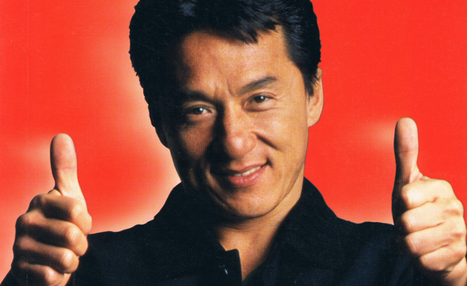

Matrix Reloaded - You keep loading, I'll keep shooting
I really appreciate this moment between these characters. Shows their commitment and support to each other.
Ace Ventura, Pet detective intro
When I was a kid, I loved this intro. It may be dated, but I will never forget how hard I laughed at this with my friends
Lord of the Rings: The Two Towers - King Theoden's speech
By far, King theoden is the character I resonate with most in all of the Lord of the Rings. I believe King Theoden has the biggest character arc and development of ALL the characters. When I trained for the army, in my mind I prepared for a fight against the odds. A fight where there was no victory for myself. This scene helped me confront and make peace with that idea.
The incredibles - No Capes!
What a brillant movie for lots of reasons. But this scene in short order delivers comedy and depth of the characters which helped me care more about the main character at this moment, Robert Parr. I think here is where the Edna Mode character stole the show.
The Other Guys - I'm a peacock
I did not see Mark Walburg as a comedy star, but I feel like he pulls it out nicely. Especially when a scene can become a meme like this scene becomes.
Deadpool - Pizza Delivery Guy
I have a man crush on Ryan Reyonds and love his portrayl of Deadpool. I appreciate the character development that get you on their side, to root for them. They totally got me.
Video courtesy of TM & © Disney / 20th Century Studios
Thanks for taking a look. I hope check out these movies, if you haven't seen them before.
